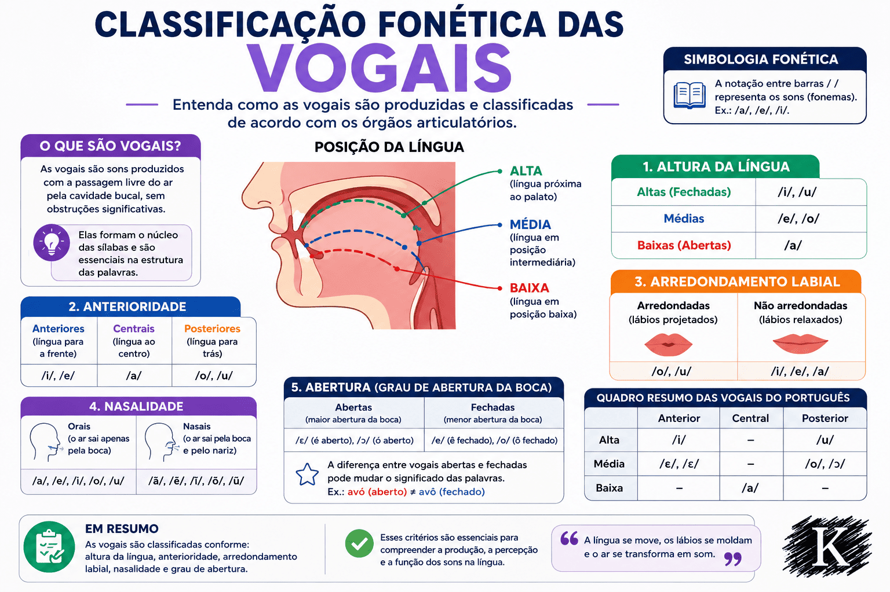

Classificação Fonética das Vogais: critérios articulatórios, acústicos e fonológicos
As vogais constituem a classe de sons de maior proeminência acústica e centralidade funcional nas línguas humanas. Enquanto as consoantes resultam de obstáculos, atritos e oclusões mecânicas no aparelho fonador, as vogais são geradas por uma coluna aérea expiratória que transita com relativa liberdade pelas cavidades supraglóticas. Na Língua Portuguesa, as vogais desempenham um papel estrutural insubstituível: funcionam como o ápice obrigatório e soberano de toda sílaba, de modo que inexiste no português qualquer sílaba desprovida de núcleo vocálico.
Sob a perspectiva da Fonética Articulatória, as vogais caracterizam-se pela modulação tridimensional do trato vocal, orquestrada primordialmente pela língua, pela mandíbula, pelos lábios e pelo véu palatino. Já sob o prisma da Fonética Acústica, as vogais comportam-se como ondas periódicas complexas ricas em frequências de ressonância — denominadas formantes —, cuja distribuição espectral permite ao ouvido humano e aos algoritmos de inteligência artificial discriminar com precisão milimétrica a qualidade de cada som emitido.
Conforme preconiza Mattoso Câmara Jr. (2011), as vogais não operam apenas como matéria física desimpedida, mas articulam-se em uma rigorosa matriz fonológica de oposições distintivas. No português brasileiro (PB), pequenas alterações na elevação lingual ou no abaixamento do véu palatino são suficientes para instaurar novos significados lexicais, como se observa na oposição entre vogais abertas e fechadas (avó vs. avô) ou entre orais e nasais (mudo vs. mundo).
Neste artigo acadêmico, você explorará a fundamentação epistemológica dos sons vocálicos, os quatro critérios articulatórios universais formalizados no quadrilátero do Alfabeto Fonético Internacional (AFI/IPA), as propriedades físicas dos formantes F1 e F2, a célebre assimetria entre as vogais tônicas e os subsistemas átonos do PB, a discussão teórica sobre as vogais nasais, além de matrizes comparativas, roteiros de análise acústica, questões resolvidas e sínteses conceituais.

O estatuto das vogais na Fonética e na Fonologia
A caracterização científica das vogais exige superar a abordagem ingênua que as confunde com as cinco letras tradicionais do alfabeto ortográfico (A, E, I, O, U). Para a ciência da linguagem, vogal é um conceito fônico e fonológico complexo, definido pela convergência de três fatores simultâneos:
- Critério Fisiológico-Articulatório: emissão produzida por corrente aérea pulmonar egressiva com vibração espontânea das pregas vocais (vozeamento intrínseco), sem constrição central superior a uma aproximação crítica causadora de atrito ou ruído turbulento;
- Critério Físico-Acústico: onda sonora quase periódica caracterizada por uma frequência fundamental (F0) límpida e concentração de energia em faixas bem delineadas de ressonância (formantes F1, F2, F3);
- Critério Distribucional-Fonológico: segmento que ocupa obrigatoriamente a posição de núcleo na hierarquia silábica, constituindo o ponto de máxima sonoridade em torno do qual se agrupam as margens consonantais.
A definição clássica de Mattoso Câmara Jr.
“A vogal é o som da fala por excelência, caracterizado pela passagem contínua e desimpedida do ar através do canal bucal livre de obstáculos, apresentando uma cavidade de ressonância ampla e desobstruída. É a presença da vogal que determina o número de sílabas de qualquer enunciado na língua portuguesa” (CÂMARA JR., 1970, p. 34).
Critérios articulatórios de classificação vocálica
Diferentemente das consoantes, que são delimitadas pelo toque tangível entre estruturas anatômicas (como os lábios ou a ponta da língua nos dentes), a articulação das vogais ocorre em um espaço contínuo no interior da boca. Para padronizar essa descrição, a International Phonetic Association (IPA) consolidou o quadrilátero vocálico, que mapeia a conformação das vogais com base em quatro parâmetros biomecânicos:
1. Altura da língua (Grau de abertura mandibular)
Refere-se ao deslocamento vertical do corpo da língua em direção à abóbada palatina, movimento diretamente acoplado à abertura ou fechamento da mandíbula inferior:
- Vogais Altas (Fechadas): o corpo da língua eleva-se próximo ao palato, reduzindo ao máximo o volume interno da cavidade bucal (ex.: [i] em viço e [u] em suco);
- Vogais Médias-Fechadas: a língua ocupa uma posição intermediária superior, com abertura bucal discreta (ex.: [e] em sede [vontade de beber] e [o] em avô);
- Vogais Médias-Abertas: a língua projeta-se em posição intermediária inferior, acompanhada de maior rebaixamento mandibular (ex.: [ɛ] em sede [localidade] e [ɔ] em avó);
- Vogal Baixa (Aberta): a língua repousa rebaixada no assoalho da boca, com máxima abertura da mandíbula e ampla cavidade ressonadora (ex.: [a] em casa).
2. Posição horizontal da língua (Zona de articulação)
Descreve o recuo ou avanço da massa lingual ao longo do eixo anteroposterior da cavidade bucal:
- Vogais Anteriores (Palatais): o corpo da língua avança em direção aos dentes incisivos e ao palato duro (ex.: [i], [e], [ɛ]);
- Vogal Central: a língua repousa em posição neutra e equilibrada na cavidade oral (ex.: [a]);
- Vogais Posteriores (Velares): o corpo da língua retrai-se em direção ao palato mole (véu palatino) e à faringe (ex.: [u], [o], [ɔ]).
3. Arredondamento dos lábios (Postura labial)
A movimentação labial desempenha um papel determinante na física acústica: ao projetar e arredondar os lábios, o falante alonga fisicamente o trato vocal, rebaixando as frequências ressonantes:
- Vogais Arredondadas (Labializadas): os lábios projetam-se ativamente para a frente, configurando uma abertura circular estreita. No português, todas as vogais posteriores são arredondadas: [u], [o], [ɔ];
- Vogais Não Arredondadas (Não Labializadas): os lábios permanecem estendidos, relaxados ou em posição neutra. No português, todas as anteriores e a central são não arredondadas: [i], [e], [ɛ], [a].
A correlação labiolingual universal
“A caracterização das vogais fundamenta-se sobretudo na posição da língua e na configuração dos lábios durante a articulação dos sons vocálicos. Nas línguas ocidentais, há uma tendência natural de associar a anterioridade lingual ao estiramento labial e a posterioridade ao arredondamento dos lábios” (CAGLIARI, 2002, p. 44; SILVA, 2003).
4. Rota do fluxo aéreo: Oralidade versus Nasalidade
A posição assumida pelo véu palatino (palato mole) atua como válvula de controle do acoplamento acústico:
Vogais Orais
O véu palatino permanece plenamente elevado e retraído contra a parede posterior da faringe, estabelecendo o fechamento velofaríngeo. A corrente de ar e as ondas acústicas escoam e ressoam exclusivamente através da cavidade oral.
Inventário tônico: [i], [e], [ɛ], [a], [ɔ], [o], [u].
Vogais Nasais
O véu palatino relaxa e abaixa parcialmente, abrindo o conduto faringonasal. A coluna de ar e a energia sonora dividem-se entre a cavidade oral e as fossas nasais, produzindo amortecimento harmônico e antiformantes específicos.
Inventário canônico: [ĩ] (fim), [ẽ] (dente), [ɐ̃] (canto), [õ] (monte), [ũ] (fundo).
A física acústica das vogais: os Formantes F1 e F2
Na Fonética Acústica laboratorial, as vogais são identificadas e plotadas graficamente não pela inspeção visual da boca, mas pela medição de seus formantes — picos de energia acústica amplificados pelas ressonâncias do trato vocal (KENT; READ, 2015). A relação entre a anatomia da boca e a física dos formantes é direta e elegante:
Primeiro Formante (F1) — Altura e Abertura
O valor de F1 (em Hertz) é inversamente proporcional à altura da língua no trato vocal. Quanto mais baixa a língua e mais aberta a mandíbula, maior é o volume da faringe e maior será a frequência de F1:
- Vogal baixa [a]: F1 elevado (cerca de 700 Hz a 850 Hz);
- Vogais médias [e, o, ɛ, ɔ]: F1 intermediário (400 Hz a 600 Hz);
- Vogais altas [i, u]: F1 reduzido (250 Hz a 350 Hz).
Segundo Formante (F2) — Anterioridade e Lábios
O valor de F2 (em Hertz) é diretamente proporcional ao avanço horizontal da língua e inversamente proporcional ao arredondamento labial. Quanto mais para a frente a língua avança, menor é a cavidade oral anterior e maior será o F2:
- Vogais anteriores [i, e, ɛ]: F2 elevado (1.800 Hz a 2.500 Hz);
- Vogal central [a]: F2 médio (1.200 Hz a 1.400 Hz);
- Vogais posteriores [u, o, ɔ]: F2 rebaixado (700 Hz a 1.100 Hz).
O sistema vocálico do PB: simetria tônica e reduções átonas
Uma das marcas mais fascinantes da fonologia da Língua Portuguesa reside na assimetria do seu inventário vocálico oral, cujo número de contrastes varia drasticamente em função da posição do acento tônico (CÂMARA JR., 2011; SILVA, 2003):
A Escala de Redução Vocálica do Português Brasileiro
- Posição Tônica (Máxima Distinção): 7 fonemas orais simétricos (/i, e, ɛ, a, ɔ, o, u/), onde a oposição entre médias-abertas e médias-fechadas é produtiva (ex.: sede /sɛdi/ vs. sede /sedi/);
- Posição Pretônica (Redução Parcial): o sistema reduz-se tipicamente a 5 vogais (/i, e, a, o, u/), neutralizando as vogais abertas /ɛ/ e /ɔ/, exceto em casos de harmonia vocálica ou derivação;
- Posição Pós-Tônica Não Final: inventário restrito a 4 vogais (/i, e, a, u/), como em número, pérola;
- Posição Átona Final (Máxima Redução): o sistema colapsa para apenas 3 vogais funcionais (/i, a, u/), pois as médias /e/ e /o/ elevam-se obrigatoriamente para [i] e [u] na fala padrão (ex.: noite [ˈnoj.tʃi], livro [ˈli.vɾu]).
O debate teórico das vogais nasais: Monofonema ou Vogal + Arquifonema?
Existe uma célebre controvérsia epistemológica na fonologia do português. Autores como Mattoso Câmara Jr. (1970) defendem a hipótese bifonêmica: as vogais nasais não seriam fonemas independentes, mas a realização fonética de uma vogal oral pura seguida por uma consoante nasal abstrata em coda silábica (/aN/, /eN/, /iN/, /oN/, /uN/), que nasaliza a vogal e depois se apaga. Outros teóricos (como Almir de Almeida) sustentam a hipótese monofonêmica, considerando que a nasalidade é um traço fonológico intrínseco que estabelece 5 fonemas vocálicos nasais autônomos no PB (/ĩ, ẽ, ɐ̃, õ, ũ/).
Quadro geral das vogais do português brasileiro
A tabela a seguir consolida a classificação articulatória, as propriedades acústicas médias e exemplos contextuais do inventário vocálico do português brasileiro:
| Vogal (IPA) | Altura / Abertura | Anterioridade | Lábios | Fluxo Aéreo | Faixa Típica F1 / F2 | Exemplo no PB |
|---|---|---|---|---|---|---|
| /i/ | Alta (Fechada) | Anterior | Não arredondada | Oral | ~300 Hz / ~2.300 Hz | vida [ˈvi.dɐ] |
| /e/ | Média-fechada | Anterior | Não arredondada | Oral | ~450 Hz / ~2.000 Hz | medo [ˈme.du] |
| /ɛ/ | Média-aberta | Anterior | Não arredondada | Oral | ~600 Hz / ~1.800 Hz | festa [ˈfɛs.tɐ] |
| /a/ | Baixa (Aberta) | Central | Não arredondada | Oral | ~800 Hz / ~1.350 Hz | casa [ˈka.zɐ] |
| /ɔ/ | Média-aberta | Posterior | Arredondada | Oral | ~600 Hz / ~1.050 Hz | bola [ˈbɔ.lɐ] |
| /o/ | Média-fechada | Posterior | Arredondada | Oral | ~450 Hz / ~900 Hz | bolo [ˈbo.lu] |
| /u/ | Alta (Fechada) | Posterior | Arredondada | Oral | ~300 Hz / ~750 Hz | uva [ˈu.vɐ] |
| /ɐ̃/ | Média-baixa | Central | Não arredondada | Nasal | ~600 Hz / ~1.300 Hz | canto [ˈkɐ̃.tu] |
| /ẽ/ | Média-fechada | Anterior | Não arredondada | Nasal | ~400 Hz / ~1.900 Hz | dente [ˈdẽ.tʃi] |
| /ĩ/ | Alta (Fechada) | Anterior | Não arredondada | Nasal | ~320 Hz / ~2.150 Hz | cinco [ˈsĩ.ku] |
| /õ/ | Média-fechada | Posterior | Arredondada | Nasal | ~450 Hz / ~900 Hz | ponte [ˈpõ.tʃi] |
| /ũ/ | Alta (Fechada) | Posterior | Arredondada | Nasal | ~320 Hz / ~800 Hz | fundo [ˈfũ.du] |
Roteiro metodológico: como analisar e plotar vogais acusticamente
Para estudantes, pesquisadores e fonoaudiólogos que realizam análise laboratorial de fala, a caracterização de amostras vocálicas exige um protocolo técnico rigoroso:
Etapas do roteiro de análise acústica vocálica
- Gravação controlada do corpus fonético: capturar gravações em formato WAV sem compressão (44.100 Hz / 16 bits), contendo palavras-alvo inseridas em frases-veículo (ex.: "Diga 'bala' baixinho");
- Segmentação no software de acústica (ex.: Praat): identificar o início e o fim da vogal no oscilograma a partir do surgimento do primeiro pulso periódico de glote e na esteira de formantes do espectrograma;
- Medição do ponto estável (Ponto Médio): extrair os valores em Hertz de F1 e F2 exatamente no meio da extensão temporal da vogal (aos 50%), evitando a interferência coarticulatória das consoantes vizinhas;
- Normalização de formantes: aplicar fórmulas matemáticas de normalização (como o método Lobanov) para possibilitar a comparação estatística entre falantes de diferentes gêneros e estaturas físicas;
- Plotagem no gráfico de dispersão F1 versus F2: desenhar o gráfico com os eixos invertidos (F2 no eixo horizontal invertido e F1 no eixo vertical invertido), reproduzindo com exatidão matemática a geometria visual do quadrilátero vocálico anatômico.
Exemplo prático de análise: a oposição funcional entre /o/ e /ɔ/
Situação fonológica em análise
Compare a realização fônica e acústica das palavras avô [aˈvo] e avó [aˈvɔ] na pronúncia culta do português brasileiro.
Análise articulatória comparativa
Ambas as vogais compartilham a mesma zona horizontal de articulação (são posteriores, com recuo do corpo lingual em direção ao véu palatino), o mesmo padrão de postura labial (são arredondadas, com protrusão labial anterior) e a mesma rota do fluxo aéreo (são orais, com vedação velofaríngea completa).
A distinção reside exclusivamente na altura lingual e grau de abertura mandibular: em avô ([o]), a língua eleva-se até a região média-fechada, mantendo menor distância em relação ao palato; em avó ([ɔ]), a mandíbula abaixa-se cerca de 4 a 6 milímetros adicionais, rebaixando a língua até a altura média-aberta.
Comportamento nos espectrogramas acústicos
No espectrograma, a vogal média-fechada [o] apresenta F1 centrado em torno de 420 Hz a 470 Hz. Na vogal média-aberta [ɔ], em virtude da maior abertura bucal e rebaixamento lingual, o formante F1 sobe expressivamente para a faixa de 580 Hz a 650 Hz. O segundo formante (F2) permanece em patamares baixos em ambas (~900 Hz a 1.050 Hz), confirmando o recuo e o arredondamento dos lábios.
Relevância linguística
Esse contraste demonstra que uma variação biomecânica inferior a meio centímetro de deslocamento mandibular é suficiente para gerar contrastes acústicos captados instantaneamente pelo cérebro do ouvinte, operando como par mínimo e distinguindo termos genealógicos fundamentais da Língua Portuguesa.
Questões para estudo e reflexão
Questão 1
(ENEM / Análise Linguística) No português brasileiro, os vocábulos pôde (passado) e pode (presente) diferenciam-se na fala unicamente pela pronúncia da vogal tônica. Qual parâmetro fonético-articulatório é responsável por marcar essa distinção gramatical e temporal?
Ver resposta comentada
Resposta comentada: O parâmetro responsável é a altura da língua / grau de abertura bucal. Na forma pretérita pôde, a vogal é média-fechada (/o/), exigindo menor abertura da mandíbula e maior elevação lingual; na forma presente pode, a vogal é média-aberta (/ɔ/), realizada com maior abaixamento da língua e maior abertura mandibular. Ambos os sons compartilham a posterioridade, o arredondamento labial e a oralidade.
Questão 2
(PAES UEMA / Letras) Em relação à acústica da fala, o que representam os formantes F1 e F2 e como eles se relacionam com os movimentos da língua durante a produção das vogais?
Ver resposta comentada
Resposta comentada: Os formantes são frequências de ressonância natural do trato vocal. O primeiro formante (F1) está inversamente relacionado à altura da língua (abertura da boca): quanto mais baixa a língua e mais aberta a boca (como em [a]), maior a frequência de F1; quanto mais alta a língua (como em [i] e [u]), menor o F1. O segundo formante (F2) relaciona-se à posição horizontal da língua (anterioridade versus posterioridade): quanto mais avançada a língua para a frente (como em [i]), maior o valor de F2; quanto mais recuada para trás e arredondados os lábios (como em [u]), menor será a frequência de F2.
Questão 3
(Concurso Público / Linguística) Qual é a principal tese defendida por Mattoso Câmara Jr. a respeito da estrutura fonológica das chamadas "vogais nasais" na Língua Portuguesa?
Ver resposta comentada
Resposta comentada: Mattoso Câmara Jr. defendeu a hipótese bissonântica (ou bifonêmica). Segundo o linguista, o português não possui fonemas vocálicos nasais autônomos no plano abstrato da língua; as vogais nasais seriam, na verdade, sequências de uma vogal oral pura seguida de um arquifonema nasal em posição de coda silábica (/aN/, /eN/, /iN/, /oN/, /uN/). Esse arquifonema nasal exerce uma influência coarticulatória, nasalizando a vogal precedente antes de sofrer enfraquecimento articulatório.
Questão 4
(Mestre Kira / Fonoaudiologia) Ao analisar o espectrograma de uma vogal desconhecida, o fonoaudiólogo observa os seguintes valores médios: F1 = 280 Hz e F2 = 2.350 Hz. A qual vogal do português brasileiro correspondem esses dados acústicos e qual a sua classificação articulatória?
Ver resposta comentada
Resposta comentada: Os valores correspondem à vogal alta anterior não arredondada /i/. O F1 extremamente baixo (~280 Hz) indica que a língua está em sua elevação vertical máxima (vogal alta/fechada). O F2 muito elevado (~2.350 Hz) evidencia que o corpo lingual encontra-se fortemente projetado para a frente da cavidade oral, próximo aos dentes e palato duro (vogal anterior), com os lábios estirados sem arredondamento.
Questão 5
(Vestibular Tradicional / Fonologia) Por que a distribuição das vogais na posição átona final do português brasileiro é considerada um caso clássico de neutralização fonológica?
Ver resposta comentada
Resposta comentada: Porque, na posição átona final (no término de palavras sem acento tônico), o sistema fonológico do PB perde a capacidade de sustentar as oposições entre vogais médias e altas. As oposições entre /e/ e /i/ e entre /o/ e /u/ deixam de existir, neutralizando-se: /e/ eleva-se compulsoriamente para [i] (como em ponte [ˈpõ.tʃi]) e /o/ eleva-se para [u] (como em livro [ˈli.vɾu]). Dessa forma, o inventário vocálico reduz-se de sete fonemas na tônica para apenas três arquifonemas (/I, A, U/) na posição átona final.
Resumo da Classificação Fonética das Vogais
- As vogais caracterizam-se pelo fluxo aéreo desimpedido na cavidade bucal e funcionam como núcleos obrigatórios de toda sílaba na Língua Portuguesa;
- A classificação articulatória formaliza-se em quatro eixos: altura da língua (abertura), posição horizontal (anterioridade), arredondamento labial e rota velofaríngea (oralidade/nasalidade);
- A altura lingual divide as vogais em altas (/i, u/), médias-fechadas (/e, o/), médias-abertas (/ɛ, ɔ/) e baixa (/a/);
- A posição horizontal classifica as vogais em anteriores (/i, e, ɛ/), central (/a/) e posteriores (/u, o, ɔ/);
- O arredondamento labial alonga acusticamente o trato vocal e correlaciona-se com a posterioridade vocálica no português;
- Na acústica, o formante F1 correlaciona-se inversamente à altura da língua e o formante F2 correlaciona-se diretamente ao avanço anterior;
- O português brasileiro apresenta 7 vogais orais na sílaba tônica, reduzindo-se progressivamente até colapsar em apenas 3 contrastes na átona final ([i], [ɐ], [u]);
- A nasalidade vocálica decorre do rebaixamento do véu palatino, havendo debate teórico histórico entre a hipótese monofonêmica e a bifonêmica de Mattoso Câmara Jr.
Perguntas frequentes sobre a Classificação das Vogais
Qual é a diferença entre vogais abertas e fechadas?
Essa distinção refere-se ao grau de abertura da mandíbula e elevação da língua. Vogais abertas (como [a], [ɛ] de pé e [ɔ] de avó) são produzidas com a boca mais aberta e a língua rebaixada. Vogais fechadas (como [i], [u], [e] de você e [o] de avô) são articuladas com a língua elevada próximo ao teto da cavidade bucal e menor abertura mandibular.
Por que as vogais posteriores do português são sempre arredondadas?
Trata-se de uma característica fonológica consolidada na evolução histórica da língua portuguesa. Quando a língua recua em direção ao fundo da boca (posterioridade), a musculatura labial arredonda-se e projeta-se naturalmente para a frente nas vogais /u/, /o/ e /ɔ/, somando o efeito acústico do alongamento do trato ao recuo lingual para rebaixar o formante F2.
Quantas vogais existem afinal na língua portuguesa?
Enquanto o alfabeto ortográfico possui apenas 5 letras de base vocálica, o sistema fonético e fonológico do português brasileiro possui 7 vogais orais em posição tônica (/i, e, ɛ, a, ɔ, o, u/) e 5 vogais nasais (/ĩ, ẽ, ɐ̃, õ, ũ/), totalizando pelo menos 12 qualidades vocálicas nucleares distintas.
O que são formantes vocálicos e para que servem?
Formantes são faixas de frequência sonora nas quais a energia acústica da voz é fortemente amplificada pelas ressonâncias naturais do trato vocal. Cada postura da língua e dos lábios molda uma caixa de ressonância com formantes únicos (F1 e F2), permitindo a identificação computadorizada das vogais e o desenvolvimento de sintetizadores de fala e assistentes de voz.
O que é a neutralização das vogais átonas?
É o fenômeno fonológico em que o contraste entre certas vogais deixa de funcionar em sílabas que não recebem o acento tônico. No português brasileiro, por exemplo, a diferença distintiva entre /e/ e /ɛ/ e entre /o/ e /ɔ/ desaparece nas sílabas átonas finais, onde ocorrem apenas as realizações enfraquecidas [i] e [u] (como em leite [ˈlej.tʃi] e carro [ˈka.hu]).
Como o véu palatino produz a diferença entre vogais orais e nasais?
Quando o véu palatino se contrai e sobe, ele bloqueia a passagem de ar para o nariz, forçando o som a sair somente pela boca (vogal oral). Quando o véu palatino relaxa e abaixa, a passagem faringonasal se abre, permitindo que a coluna de ar e as ondas acústicas entrem nas fossas nasais, criando a ressonância nasal (como em irmã e pão).
O que é o quadrilátero vocálico do IPA?
É um diagrama geométrico universal desenvolvido pelo Alfabeto Fonético Internacional que esquematiza o espaço tridimensional da cavidade oral humana. O eixo vertical representa a altura da língua (abertura da boca) e o eixo horizontal representa o avanço ou recuo lingual (anterioridade e posterioridade), servindo de mapa de referência para todas as vogais das línguas do mundo.
Qual é a importância da classificação vocálica para a alfabetização e a fonoaudiologia?
Para a alfabetização, compreender as vogais auxilia no desenvolvimento da consciência fonológica e previne erros de escrita comuns decorrentes da redução átona (como escrever meninu ou genti). Para a fonoaudiologia, a classificação fornece os parâmetros para avaliar distúrbios de articulação, reabilitar motricidade orofacial e tratar a hipernasalidade involuntária.
Considerações finais
A classificação fonética das vogais estabelece um dos pilares mais consistentes da ciência linguística, desvelando a perfeita harmonia entre a biomecânica muscular dos articuladores e a física acústica da ressonância da fala. Ao compreender os eixos de altura, anterioridade, postura labial e fechamento velofaríngeo, desmistifica-se a aparente simplicidade dos sons vocálicos e revela-se a refinada matriz de contrastes que rege o idioma.
Para estudantes de Letras, educadores em fase de alfabetização, fonoaudiólogos e desenvolvedores de tecnologias de fala, o domínio dos critérios vocálicos do português brasileiro proporciona o instrumental descritivo indispensável para compreender a variação dialetal do país, qualificar a prática pedagógica e intervir clinicamente com máxima precisão sobre os fenômenos sonoros da linguagem humana.
Conteúdos relacionados
- Introdução à Fonética: o que é, para que serve e como se relaciona com a fonologia
- Classificação dos Sons da Fala: consoantes e vogais na Fonética e na Fonologia
- Os órgãos da fala e a produção dos sons da linguagem humana
- Relação entre Fonema e Grafema na Língua Portuguesa
- Fenômenos Fonéticos do Português Brasileiro: Processos e Variações
- Fonética e Estudo dos Sons da Fala — Índice de Conteúdos
Referências
- CAGLIARI, Luiz Carlos. Análise Fonológica: introdução à teoria e à prática. Campinas: Mercado de Letras, 2002.
- CALLOU, Dinah; LEITE, Yonne. Iniciação à Fonética e à Fonologia. 11. ed. Rio de Janeiro: Jorge Zahar, 2009.
- CÂMARA JR., Joaquim Mattoso. Princípios de linguística geral. 4. ed. Rio de Janeiro: Acadêmica, 1970.
- CÂMARA JR., Joaquim Mattoso. Estrutura da Língua Portuguesa. 46. ed. Petrópolis: Vozes, 2011.
- CRISTÓFARO-SILVA, Thaïs. Fonética e Fonologia do Português: roteiro de estudos e guia de exercícios. 11. ed. São Paulo: Contexto, 2012.
- INTERNATIONAL PHONETIC ASSOCIATION. Handbook of the International Phonetic Association: a guide to the use of the International Phonetic Alphabet. Cambridge: Cambridge University Press, 1999.
- KENT, Ray D.; READ, Charles. The acoustic analysis of speech. 3. ed. San Diego: Singular Publishing Group, 2015.
- LADEFOGED, Peter. A Course in Phonetics. 5. ed. Boston: Thomson Wadsworth, 2006.
- SEARA, Izabel Christine; NUNES, Vanessa Gonzaga; LAZZAROTTO-VOLCÃO, Cristiane. Para conhecer Fonética e Fonologia do Português. São Paulo: Contexto, 2011.
- SILVA, Thaïs Cristófaro. Fonética e Fonologia do Português. 9. ed. São Paulo: Contexto, 2003.
Explore Outros Conteúdos
Continue seus estudos acessando outras seções do site Mestre Kira: